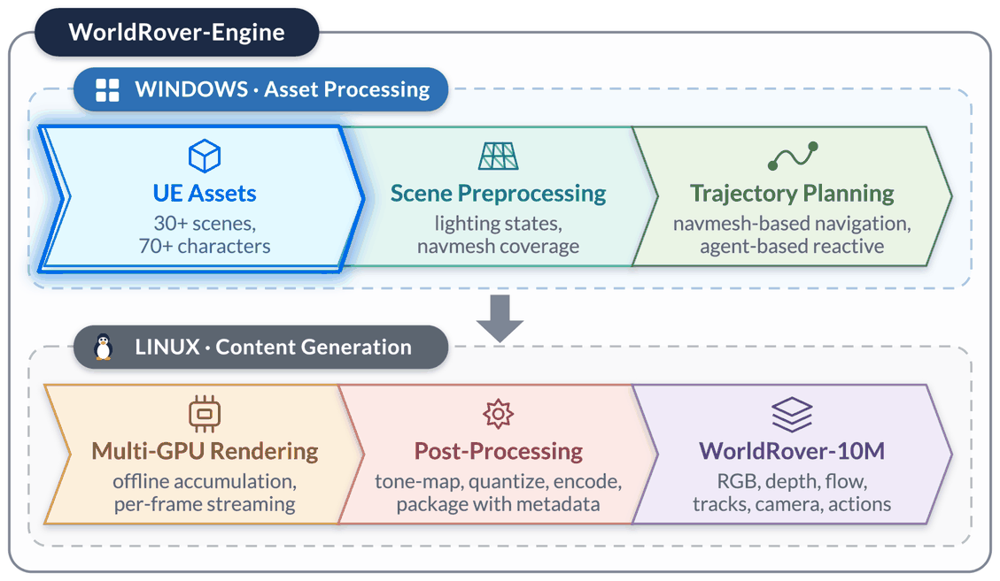

WorldRover
A Scalable Synthetic Video Data Engine for World Exploration with Rich Annotations
1 Alaya Lab · 2 The University of Tokyo · 3 Shanghai Innovation Institute · * Equal · † Corresponding
Resources
Highlights
- A scalable UE data engine that ingests UE assets, builds multi-style scenes, plans routes, and renders them headless with streaming post-processing.
- The same exploration replayed from first-person, third-person and 360° panoramic cameras under different environmental states.
- Sequences pair RGB with metric depth, optical flow, long-range point tracks, camera trajectories and action signals throughout each exploration.
21.9M
Frames
6,003
Sequences
32
Environments
202.7 h
Duration
18.7 TB
Volume


Multi-View
Three observations of a route with matched timing and geometry.
First-person
Third-person
360° panoramic
Multi-Modal
Colour, depth and motion, one rasterization of the same instant.
RGB video
Metric depth
Optical flow
Long-range point tracks
Multi-Style
Geometry and motion remain fixed while illumination or texture changes.
Day
Golden hour
Night
Snow
Storm
White model · Venice
White model · Train station
White model · Village
Multi-Scene
30+ artist-built UE scenes, interior to city scale.
Paris
Cyberpunk
Mayan
Island city
Art nouveau
Magic school
Multi-Character
70+ animated humanoids, animals and creatures.
Samurai
Archer
Shadow
Wolf
Eagle
BibTeX
@article{worldrover2026,
title = {WorldRover: A Scalable Synthetic Video Data Engine
for World Exploration with Rich Annotations},
author = {Xu, Xiaojie and Lin, Zhengyuan and Li, Runyi and
Liu, Yihao and Zhang, Kaipeng and Ge, Yongtao},
journal = {arXiv preprint arXiv:2608.15659},
year = {2026},
eprint = {2608.15659},
archivePrefix = {arXiv},
url = {https://arxiv.org/abs/2608.15659}
}